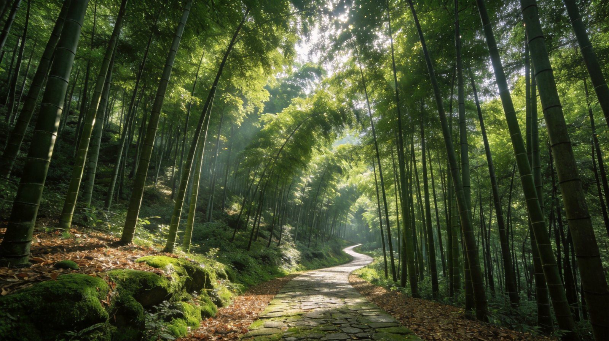
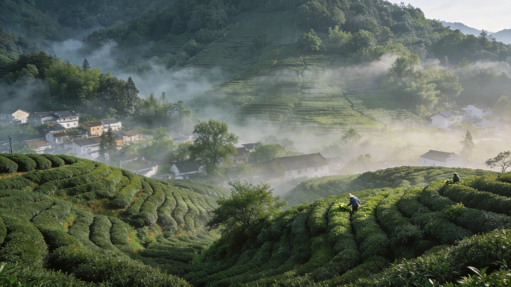
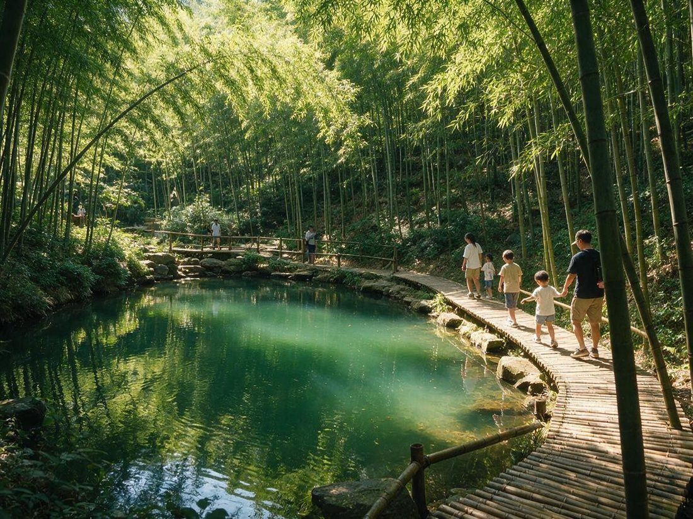

封面
安吉印象
怎么去
自驾方案
四季景色
竹海
云上草原
乐园亲子
热门看点
山珍美食
住宿
行程预算
实用贴士
周边连玩
安全

竹海云境 · 山野乐园 · 绿谷江南
安吉
竹海 · 云上草原 · 凯蒂猫乐园
竹海
云上草原
凯蒂猫
白茶
玻璃栈道
浙江 · 湖州
A5 口袋手册
· Anji · 竹与云之乡
1
/ 15
安吉
竹海云境 · 山野乐园
为什么去安吉
Anji · 竹与云
安吉大竹海 · 万顷竹波摇绿浪
Bamboo Sea
🎋 安吉三看
大竹海
：中国竹乡之冠，满山翠竹、摇曳如海，影视取景地
云上草原
：高山悬空玻璃栈道、悬崖秋千，云端度假体验
凯蒂猫乐园
：Hello Kitty 主题乐园，亲子必玩粉色童话
TIP
安吉是"中国竹乡 + 白茶故里"，竹海、云海与亲子乐园在此交织成山野度假天堂。
2
/ 15
安吉
前往方式
怎么去安吉
How to Get There

白茶茶园

竹海
✈ 外部交通三选一
高铁
：安吉高铁站（湖州/杭州方向），杭州东约45分钟直达
自驾
：杭州约1.5h、湖州40min、南京约2.5h进景区
大巴
：杭州/上海汽车站可达安吉县城，转公交进景区
TIP
景区分散（竹海/云上/乐园各异），自驾最方便；高铁到站后建议租车或打的。
3
/ 15
安吉
自驾方案
自驾路线与提醒
Self-Driving Route
竹海公路
云上草原
🛣 经典自驾动线
DAY 1
杭州→安吉（约90km/1.5h）→大竹海→宿县城
DAY 2
云上草原一日（玻璃栈道/秋千）→晚温泉或返
DAY 3
凯蒂猫乐园亲子/白茶园采茶，返程
🛣
山路弯多
云上草原等上山路段弯道多、坡陡，减速慢行防晕车
🅿
旺季停车难
节假日景区停车场紧张，早到或乘接驳车
TIP
旺季周末拥堵明显，建议工作日出行；云上草原索道受天气影响会停运。
4
/ 15
安吉
一城四季
四季有何不同风景
Four Seasons
春·采茶
夏·竹海
🌱
春（3–5月）
白茶采摘季，茶园新绿如毯，竹笋破土，清新自然
☘
夏（6–9月）
竹海避暑天堂，山间云雾凉爽，适合亲子与漂流，旺季人多
🍂
秋（10–11月）
竹山渐染秋色，天高气爽，云上草原看红枫红黄交织
❄
冬（12–2月）
竹海雪景江南独特，温泉滑雪搭配，淡季人少价优
TIP
想体验采茶选3–4月；避暑选6–9月（注意人流）；冬雪竹海+温泉最惬意。
5
/ 15
安吉
竹海线
大竹海
DAY 1
万顷竹林 · 影视取景
BAMBOO
🎋
竹海
漫游
🏞
景区
观景
🥾
竹径
徒步
大竹海 · 中国竹乡的绿浪
Bamboo Sea
上午
大竹海景区
登观景楼俯瞰万顷竹波，走竹海栈道闻竹香
下午
竹子博览园
全球竹种大观园，竹工艺品与竹博馆
TIP
竹海拍摄最佳在清晨薄雾或日落，竹林光影层次最丰富。
6
/ 15
安吉
云上草原线
云上草原
DAY 2
高山玻璃栈道 · 悬崖秋千
CLOUD
云上草原 · 云端之上的惊险刺激
Cloud Meadow
☁ 云上草原玩法
玻璃栈道
：悬空于悬崖上的透明栈道，俯瞰山谷
悬崖秋千·滑草
：山巅刺激项目，成人亲子皆宜
高山草原·民宿
：云端宿营，日出云海尽收
TIP
需乘索道上山；遇大风/暴雨索道临时停运，提前查天气、备足时间。
7
/ 15
安吉
亲子乐园线
凯蒂猫乐园
DAY 3
粉色童话 · 亲子时光
KITTY
凯蒂猫乐园 · 粉色童话世界
Hello Kitty Park
🎀 亲子乐园看点
Hello Kitty 主题区
：粉色城堡、人偶巡游，亲子拍照圣地
儿童游乐设施
：旋转木马、小火车，低龄友好
主题餐饮·周边
：凯蒂猫甜品与限定玩偶
TIP
周末家长游客多，建议工作日或早到；乐园适合3–10岁小朋友。
8
/ 15
安吉
不可错过
热门看点 TOP 6
Must-See
① 大竹海
中国竹乡，万顷竹浪
核心
② 云上草原
玻璃栈道+悬崖秋千，云端刺激
刺激
③ 凯蒂猫乐园
Hello Kitty 粉色童话乐园
亲子
④ 竹子博览园
全球竹种园 + 竹工艺品
人文
⑤ 白茶茶园
安吉白茶原产地，采茶体验
茶
⑥ 天荒坪景区
高山湖泊、滑雪与星空
山水
TIP
竹海+茶园可串成江南山野线，云上+乐园适合亲子度假2日。
9
/ 15
安吉
山珍美食
当地特色味
Local Food
🎋
冬笋·笋干
安吉笋宴一绝，油焖笋、笋干烧肉
🐟
太湖银鱼·溪鱼
山溪河鲜，清蒸鲜甜
🍵
安吉白茶
中国名茶，汤色清澈、滋味鲜爽
🐔
竹林鸡·土家菜
散养竹林鸡炖汤，农家乐招牌
🥜
山核桃·板栗
浙北干果，秋收时节必备
TIP
笋类、山核桃是安吉伴手礼首选；农家乐比景区餐厅更正宗实惠。
10
/ 15
安吉
住宿
住哪
Where to Stay
安吉县城
餐饮交通便利，近各景区车程30–60min
首选
竹海民宿
竹林环绕的江南小院，淡旺季分明
民宿
云上草原度假
高山民宿+温泉，度假体验拉满
度假
TIP
夏季避暑、节假日亲子高峰价高房紧，提前1–2周订；淡季体验极好。
11
/ 15
安吉
行程与预算
行程怎么安排
Plan & Budget
2日经典
约 500–800 元/人
D1
大竹海 + 竹子博览园 → 宿县城
D2
茶园采茶 + 返程或县城休闲
3日亲子度假
约 900–1400 元/人
D1
大竹海 → 宿
D2
云上草原一日
D3
凯蒂猫乐园亲子 → 返程
交通住宿
300–800 元
🚄
高铁杭州东—安吉 约 60–90/人
🚗
自驾油费路桥 单程 100–300
🏨
民宿 200–600/晚，旺季上浮
TIP
云上草原+乐园门票不菲，提前在官方渠道购票享套票优惠。
12
/ 15
安吉
实用贴士
来之前要知道
Good to Know
👟
穿舒适鞋
竹海步行与云上跋涉多，穿防滑运动鞋
🌧
备雨具
江南多雨多变，随身带伞，云上草原风大
📱
门票预约
热门景区节假日限流，提前线上预约购票
🐛
防蚊虫
山林竹海蚊虫多，夏季备驱蚊水
TIP
安吉山路信号尚可，但云上草原深处信号弱，提前缓存地图。
13
/ 15
安吉
周边连玩
周边线路
Around
🗺 串联玩法
北上
湖州太湖
：太湖湿地、古镇与湖鲜
南下
杭州西湖·莫干山
：江南名城与避暑民宿胜地
东连
乌镇·南浔古镇
：水乡古镇慢游
TIP
推荐「杭州 + 安吉 + 莫干山 + 湖州太湖」江浙山野环线，一次玩转竹海与江南水乡。
14
/ 15
安吉
安全提示
重点危险与防范
Stay Safe
🏔
山路险峻
云上草原等上山路弯急坡陡，控制车速、骑行注意落石
🌫
索道天气停运
大风暴雨索道停运，被困山上备好衣物耐心等待
🕳
山区防滑
雨后竹径湿滑，勿奔跑、走栈道禁越护栏
🐍
蛇虫出没
夏秋山林蛇虫多，穿长裤、勿贸然进草丛
👶
儿童看护
乐园与登山人多，看护好孩子防走失
安吉·竹与云之乡 愿你在绿谷竹海遇见山野江南 🎋
15
/ 15
Insta360
记录美好
记录美好生活
相机指南 · CAMERA GUIDE